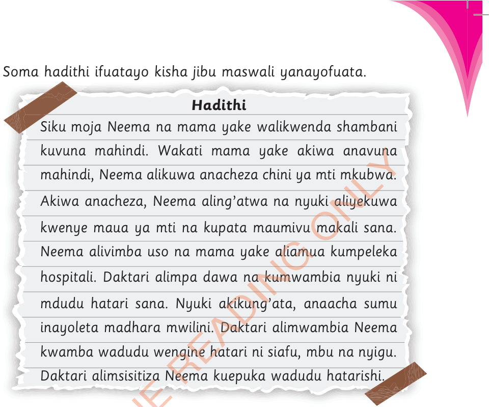

Soma hadithi ifuatayo kisha jibu maswali yanayofuata.

Hadithi
Maswali
- 1. Umejifunza nini katika hadithi hii?
- 2. Taja wadudu hatarishi uliowasikia kwenye hadithi.
- 3. Kwa nini daktari alimshauri Neema kuepuka wadudu hatarishi?
Siku moja Neema na mama yake walikwenda shambani kuvuna mahindi. Wakati mama yake akiwa anavuna mahindi, Neema alikuwa anacheza chini ya mti mkubwa. Akiwa anacheza, Neema aling’atwa na nyuki aliyekuwa kwenye maua ya mti na kupata maumivu makali sana. Neema alivimba uso na mama yake aliamua kumpeleka hospitali. Daktari alimpa dawa na kumwambia nyuki ni mdudu hatari sana. Nyuki akikung’ata, anaacha sumu inayoleta madhara mwilini. Daktari alimwambia Neema kwamba wadudu wengine hatari ni siafu, mbu na nyigu. Daktari alimsisitiza Neema kuepuka wadudu hatarishi.